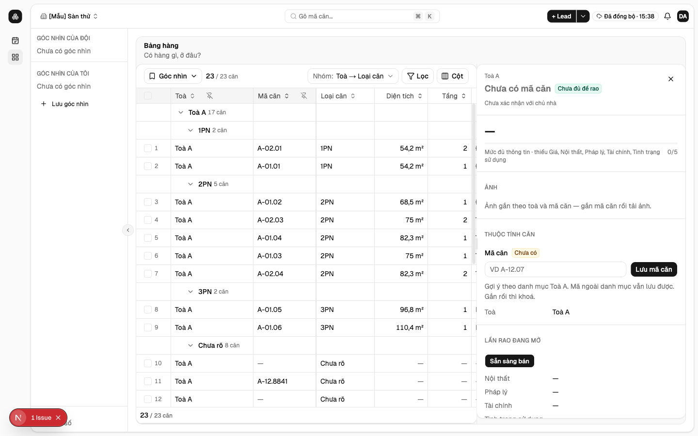
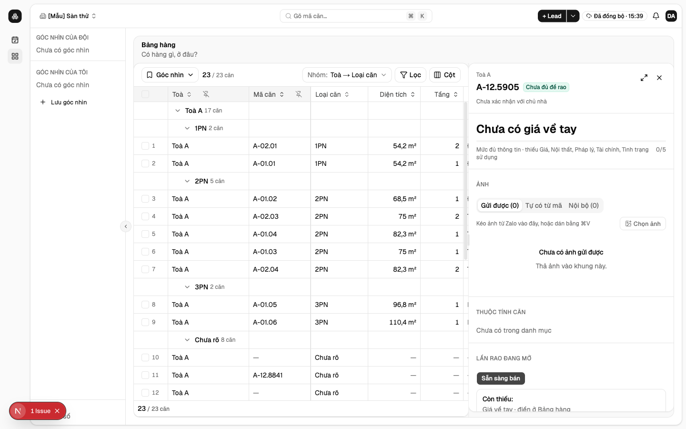
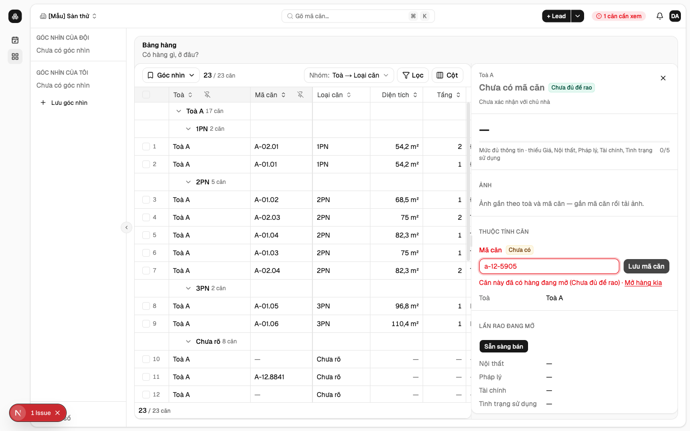
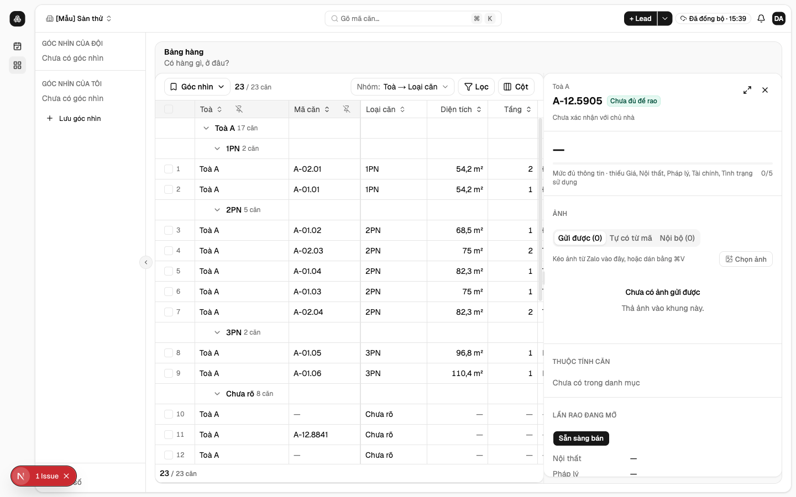
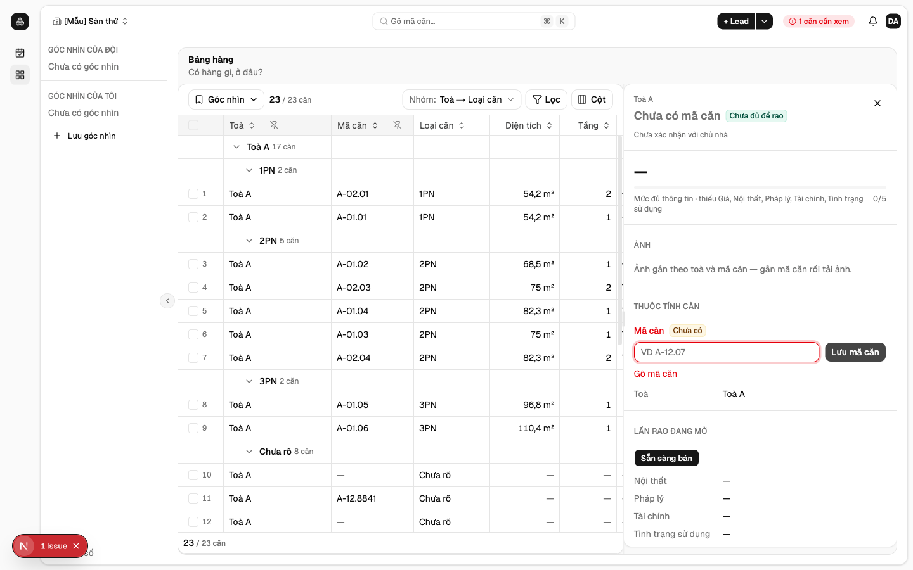
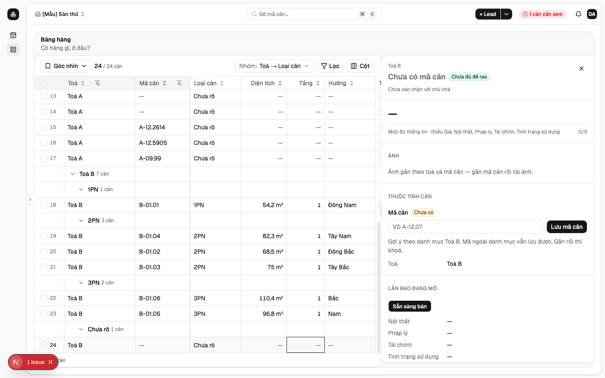
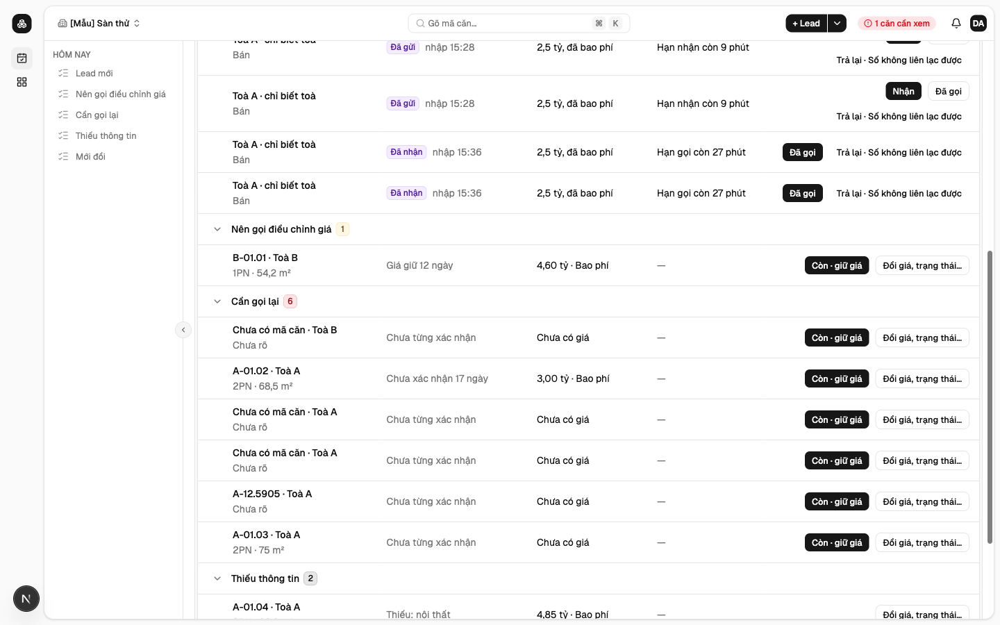
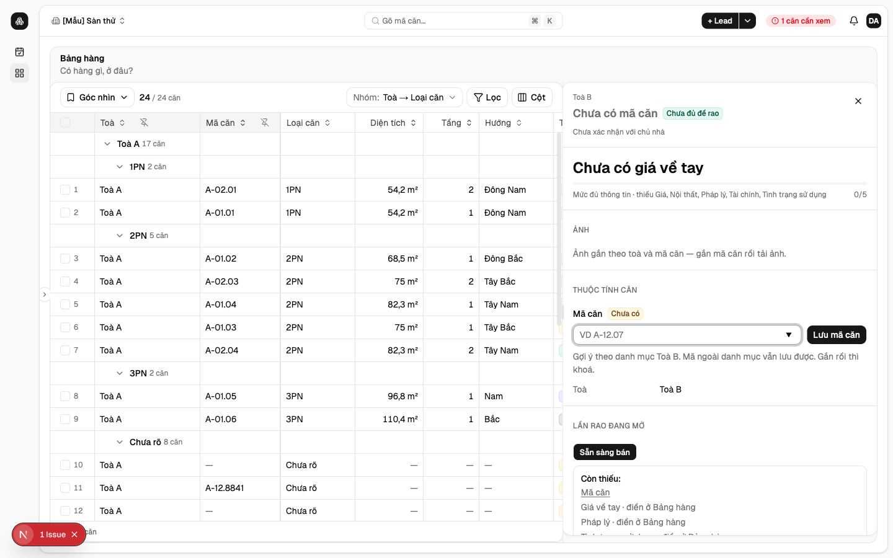
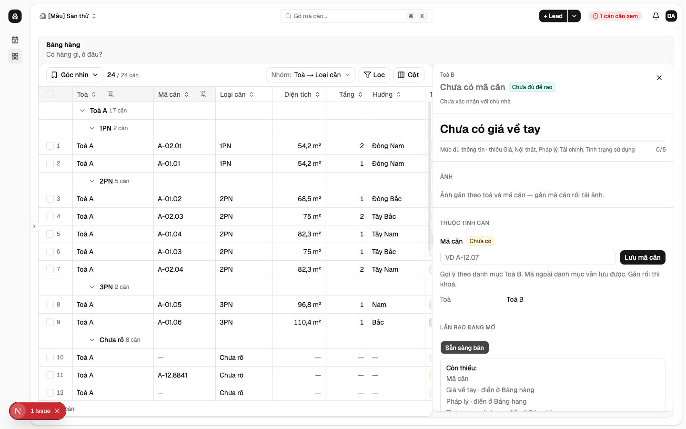
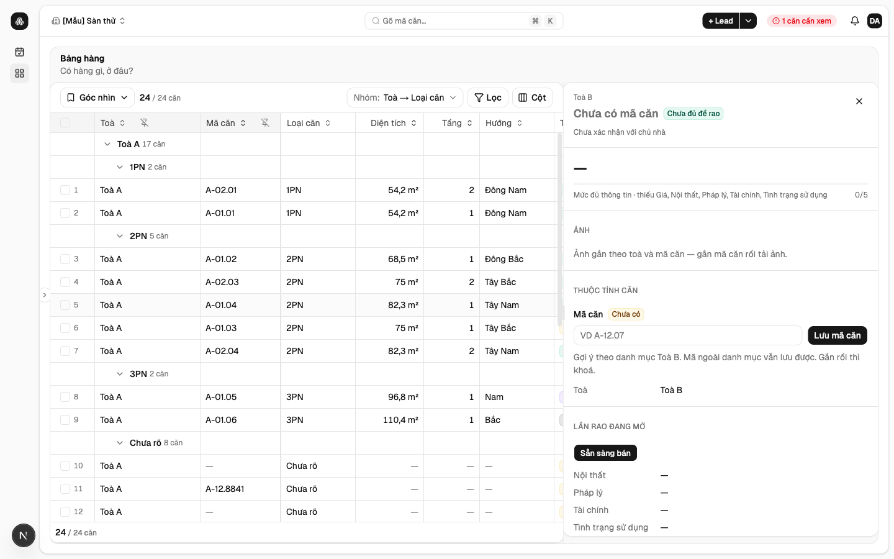

Đầu chủ điền mã căn cho hàng tạo từ lead chỉ biết toà — mở hồ sơ căn của hàng chưa có mã, gắn mã một lần, máy chặn trùng hàng đang mở cùng căn; hàng có mã thì thôi báo thiếu mã căn và xét ảnh như thường
Vì sao làm
Hàng sau 23 (dãy G). Hàng 23 chốt «C»: hàng chưa có mã căn báo thiếu «mã căn», không lên Đang bán. Hôm nay không có đường nào điền mã căn sau khi hàng đã tạo, và hồ sơ căn không mở được hàng chưa có mã. Bất biến chạm: 1 (cách ly giữa công ty — kiểm trùng chỉ trong sàn, bảng sự kiện giữ luật theo dòng); không chạm lớp source.
Đã hứa
- AC-1 — Sự kiện «gắn mã căn» của lõi: Given một hàng trong lõi When nhận sự kiện `unit_number_assigned` với payload `{unitNumber}` Then khuôn chặt nhận đúng một khoá `unitNumber` (chữ 1–200 ký tự), từ chối khoá lạ và khoá lớp chủ nhà; gấp hàng đặt `unitNumber`; hàng đã có mã thì lõi từ chối với mã `unit-number-already-set`.
- AC-2 — Cơ sở dữ liệu nhận loại sự kiện mới (cross-layer): Given cơ sở dữ liệu sau migration mới của hàng When ghi một sự kiện `unit_number_assigned` Then ràng buộc loại sự kiện nhận nó, loại lạ vẫn bị chặn; bộ kiểm cách ly giữa công ty xanh.
- AC-3 — API gắn mã căn (cross-layer): Given đầu chủ có quyền sửa một hàng chưa có mã When gửi `unit_number_assigned` qua `POST /api/v1/listings/{id}/events` Then 200 (như mọi lệnh đổi hàng) và hàng mang mã mới; hàng đã có mã → 422 `unit-number-already-set`; sàn đã có hàng đang mở khác trên cùng căn (cùng toà, mã so bằng `app.unit_key`; «đang mở» là tập `OPEN_STATUSES` của lõi) → 422 `unit-already-listed` kèm mã hàng kia; hàng cùng căn ở trạng thái đóng không chặn; hàng của sàn khác cùng căn không chặn; người không có quyền sửa hàng → 403.
- AC-4 — Sẵn sàng bán sau khi gắn mã: Given hàng vừa được gắn mã căn When kiểm điều kiện lên Đang bán Then «Còn thiếu» thôi nêu «Mã căn» và xét «Ảnh thật» như mọi hàng có mã.
- AC-5 — Hồ sơ căn mở được hàng chưa có mã: Given hàng chưa có mã trên máy When mở hồ sơ theo địa chỉ `?hang=<mã hàng>` Then hồ sơ hiện hàng ấy với ô «Mã căn» đánh dấu «Chưa có», ô nhập và nút «Lưu mã căn»; hàng đã có mã thì ô không hiện, mã chỉ đọc.
- AC-6 — Lưu mã căn trong hồ sơ (cross-layer): Given hồ sơ của hàng chưa có mã When đầu chủ gõ mã và bấm «Lưu mã căn» (hay Enter) Then lệnh đi qua hàng đợi lệnh trên máy; máy chủ nhận thì địa chỉ chuyển sang hồ sơ theo mã mới và «Còn thiếu» không còn «Mã căn»; máy chủ từ chối (đang có mạng, hay sau khi có mạng lại) thì hàng trên máy trở về chưa có mã, lệnh rời hàng đợi vào «Cần xem» với lý do của máy chủ («Căn này đã có hàng đang mở (<trạng thái hàng kia>)», mã hàng kia đi trong thân trả lời để mở liên kết «Mở hàng kia», không in ra chữ), hồ sơ hiện lỗi ấy tại ô và giữ chữ đã gõ khi còn mở; mã rỗng thì báo «Gõ mã căn», không gửi.
- AC-7 — Lối vào hồ sơ của hàng chưa có mã: Given hàng chưa có mã When đầu chủ bấm dòng của nó ở Bảng hàng, dòng «Chưa có mã căn · <toà>» ở Hôm nay, hay «Mã căn» trong «Còn thiếu» Then hồ sơ của hàng mở (hai lối đầu), con trỏ tới ô mã căn (lối thứ ba).
- AC-8 — Điện thoại: Given khổ 375 When mở hồ sơ hàng chưa có mã và gắn mã Then ô và nút dùng được, không cuộn ngang.
- AC-9 — Ghi cách mới : Given kho sau hàng When đọc Tham chiếu và ADR Then Tham chiếu ghi: mã căn gắn một lần ở hồ sơ căn, máy chặn trùng hàng đang mở cùng căn; ADR ghi loại sự kiện mới và vì sao không mở `details_changed`.
Thiết kế
docs/superpowers/specs/2026-11-02-dien-ma-can-cho-hang-design.md
Quyết định
- 2026-11-02 · Máy · approach · S1 — Đã tra tri thức: Đầu chủ điền mã căn cho hàng tạo từ lead chỉ biết toàKho đã khai tri_thuc — bước thiết kế tra trang trước khi chọn.
- 2026-11-02 · Người · seal · gate1 —
- 2026-11-02 · Máy · approach · S1 — Hỏi-1: mã căn gắn bằng một sự kiện mới «gắn mã căn» (một lần, chỉ khi hàng chưa có mã), kèm migration nới ràng buộc loại sự kiện — hàng lên T3.Sự kiện tạo hàng bất biến, sự kiện đổi chi tiết chỉ nhận bốn phần của lần rao, và ràng buộc loại sự kiện ở cơ sở dữ liệu chỉ nhận năm loại.
- 2026-11-02 · Máy · approach · S1 — Gắn mã trùng một hàng đang mở khác của sàn trên cùng căn thì máy chủ từ chối, nêu mã hàng kia; hàng đã đóng hay hàng của sàn khác không chặn.Tham chiếu §4 khai hàng là lần chào bán của sàn trên một căn, tối đa một hàng đang mở mỗi căn.
- 2026-11-02 · Máy · approach · S1 — Hỏi-2: cho điền mã căn ngoài danh mục (nhãn «Chưa có trong danh mục» như hàng tạo có mã ngoài danh mục), ô gợi ý mã của toà khi toà có trong danh mục.Hàng tạo có mã ngoài danh mục đang được nhận; danh mục do OneHub Invest cấp và có thể chưa đủ căn.
- 2026-11-02 · Máy · descope · S1 — Hỏi-3: KHÔNG làm sửa hay gỡ mã căn đã gắn (đặt nhầm) trong vòng này — mã căn đã có thì khoá.Tham chiếu luật 6: thuộc tính căn khoá; ảnh gắn theo toà + mã nên đổi mã kéo theo ảnh.
- 2026-11-02 · Máy · approach · S1 — Hồ sơ căn mở theo mã hàng (?hang=) cho hàng chưa có mã; hàng có mã vẫn mở theo mã căn như cũ.Hồ sơ hôm nay chỉ mở theo mã căn trên địa chỉ.
- 2026-11-02 · Máy · descope · S1 — bỏ design-pass — giao diện là một ô và một nút trong mục Thuộc tính căn của khuôn hồ sơ căn đã có; Cổng Phạm vi xem hình vẽ đủ vỏ, Cổng Bằng chứng xem ảnh chụp màn thật.Vòng đi khuôn sẵn của nhóm ho-so-can, không ô nào chưa có khuôn.
- 2026-11-02 · Người (Manh Phan) · approach · gate1 — Đã duyệt theo khuyến nghị: gắn mã thành công trả 200 như mọi lệnh đổi hàng; chữ «201» ở AC-3, E3, E6b sửa thành «200».người chọn ở Gate 1.5: «thành công trả 200: đồng ý» (02/11).
- 2026-11-02 · Người (Manh Phan) · approach · gate1 — Đã duyệt theo khuyến nghị: lỗi trùng căn hiện «Căn này đã có hàng đang mở (<trạng thái hàng kia>)» kèm «Mở hàng kia»; mã hàng kia đi trong thân trả lời, không in ra chữ — AC-6 và E6b sửa chữ theo đó.người chọn ở Gate 1.5: «câu báo trùng căn hiện trạng thái: đồng ý» (02/11).
- 2026-11-02 · Người (Manh Phan) · seal · gate1 — duyệt kế hoạch
- 2026-11-02 · Máy · approach · S1 — Hỏi-4: trước khi thi công, dựng bản bấm được của hồ sơ hàng chưa có mã với nút lưu giả (chưa nối máy chủ) — ba trạng thái chưa có mã, trùng căn, ô rỗng ở 1440 và 375 — chụp gửi anh xem trên màn thật.Phản biện context sạch (P0): bỏ bước này là lựa chọn của người — vòng có ba lối vào mới, bốn trạng thái và khổ điện thoại; chủ kho 02/11 muốn thấy bản thật để đổi sớm.
- 2026-11-02 · Máy · approach · S2 — Hỏi ở Gate 1.5: gắn mã thành công trả 200 như mọi lệnh đổi hàng — sửa chữ «201» thành «200» ở AC-3 và bài chấm E3, E6b.Đường lệnh POST /listings/{id}/events trả 200 cho mọi loại sự kiện, và hàng đợi trên máy chỉ coi 200 là máy chủ đã nhận (apps/web/src/lib/sync/gui.ts).
- 2026-11-02 · Máy · approach · S2 — Hỏi ở Gate 1.5: lỗi trùng căn hiện cho người «Căn này đã có hàng đang mở (<trạng thái hàng kia>)» kèm liên kết «Mở hàng kia»; mã hàng kia (chuỗi 36 ký tự) đi trong thân trả lời để mở liên kết, không in ra chữ — sửa chữ «<mã hàng>» ở AC-6.Hàng chưa có mã ngắn nào cho người đọc; mã hàng là chuỗi 36 ký tự, in ra màn là chữ vô nghĩa với đầu chủ.
Bằng chứng
Các eval
| Eval | Tiêu chí | Loại | Verdict | run_id | verified_at |
|---|---|---|---|---|---|
| E1 | AC-1 | test | PASS | minted-dien-ma-can-cho-hang-E1-r1 | 2026-11-02T08:34:23Z |
| E2 | AC-2 | test | PASS | minted-dien-ma-can-cho-hang-E2-r1 | 2026-11-02T08:34:23Z |
| E3 | AC-3 | test | PASS | minted-dien-ma-can-cho-hang-E3-r1 | 2026-11-02T08:34:23Z |
| E4 | AC-4 | test | PASS | minted-dien-ma-can-cho-hang-E4-r1 | 2026-11-02T08:34:23Z |
| E5 | AC-5 | test | PASS | minted-dien-ma-can-cho-hang-E5-r1 | 2026-11-02T08:34:23Z |
| E6 | AC-6 | test | PASS | minted-dien-ma-can-cho-hang-E6-r1 | 2026-11-02T08:34:23Z |
| E6u | AC-6 | ui-check | PASS | E6u-1793608585905 | 2026-11-02T08:34:23Z |
| E6b | AC-6 | test | PASS | minted-dien-ma-can-cho-hang-E6b-r1 | 2026-11-02T08:34:23Z |
| E7 | AC-7 | test | PASS | minted-dien-ma-can-cho-hang-E7-r1 | 2026-11-02T08:34:23Z |
| E7u | AC-7 | ui-check | PASS | minted-dien-ma-can-cho-hang-E7u-r1 | 2026-11-02T08:34:23Z |
| E8u | AC-8 | ui-check | PASS | minted-dien-ma-can-cho-hang-E8u-r1 | 2026-11-02T08:34:23Z |
| E9 | AC-9 | judgment | PASS (HỘI ĐỒNG ĐỀ XUẤT, CHỜ NGƯỜI CHỐT) | — | 2026-11-02T08:34:23Z |
| E10 | AC-6 | script | PASS | minted-dien-ma-can-cho-hang-E10-r1 | 2026-11-02T08:34:23Z |
| E11 | AC-6 | script | PASS | minted-dien-ma-can-cho-hang-E11-r1 | 2026-11-02T08:34:23Z |
Chi tiết từng eval
PASS E1 · test
AC-1: Sự kiện «gắn mã căn» của lõi: Given một hàng trong lõi When nhận sự kiện `unit_number_assigned` với payload `{unitNumber}` Then khuôn chặt nhận đúng một khoá `unitNumber` (chữ 1–200 ký tự), từ chối khoá lạ và khoá lớp chủ nhà; gấp hàng đặt `unitNumber`; hàng đã có mã thì lõi từ chối với mã `unit-number-already-set`.
ℹ duration_ms 193.851667
PASS E2 · test
AC-2: Cơ sở dữ liệu nhận loại sự kiện mới (cross-layer): Given cơ sở dữ liệu sau migration mới của hàng When ghi một sự kiện `unit_number_assigned` Then ràng buộc loại sự kiện nhận nó, loại lạ vẫn bị chặn; bộ kiểm cách ly giữa công ty xanh.
ℹ duration_ms 27681.826584
PASS E3 · test
AC-3: API gắn mã căn (cross-layer): Given đầu chủ có quyền sửa một hàng chưa có mã When gửi `unit_number_assigned` qua `POST /api/v1/listings/{id}/events` Then 200 (như mọi lệnh đổi hàng) và hàng mang mã mới; hàng đã có mã → 422 `unit-number-already-set`; sàn đã có hàng đang mở khác trên cùng căn (cùng toà, mã so bằng `app.unit_key`; «đang mở» là tập `OPEN_STATUSES` của lõi) → 422 `unit-already-listed` kèm mã hàng kia; hàng cùng căn ở trạng thái đóng không chặn; hàng của sàn khác cùng căn không chặn; người không có quyền sửa hàng → 403.
ℹ duration_ms 27681.826584
PASS E4 · test
AC-4: Sẵn sàng bán sau khi gắn mã: Given hàng vừa được gắn mã căn When kiểm điều kiện lên Đang bán Then «Còn thiếu» thôi nêu «Mã căn» và xét «Ảnh thật» như mọi hàng có mã.
ℹ duration_ms 193.851667
PASS E5 · test
AC-5: Hồ sơ căn mở được hàng chưa có mã: Given hàng chưa có mã trên máy When mở hồ sơ theo địa chỉ `?hang=<mã hàng>` Then hồ sơ hiện hàng ấy với ô «Mã căn» đánh dấu «Chưa có», ô nhập và nút «Lưu mã căn»; hàng đã có mã thì ô không hiện, mã chỉ đọc.
ℹ duration_ms 1456.422
PASS E6 · test
AC-6: Lưu mã căn trong hồ sơ (cross-layer): Given hồ sơ của hàng chưa có mã When đầu chủ gõ mã và bấm «Lưu mã căn» (hay Enter) Then lệnh đi qua hàng đợi lệnh trên máy; máy chủ nhận thì địa chỉ chuyển sang hồ sơ theo mã mới và «Còn thiếu» không còn «Mã căn»; máy chủ từ chối (đang có mạng, hay sau khi có mạng lại) thì hàng trên máy trở về chưa có mã, lệnh rời hàng đợi vào «Cần xem» với lý do của máy chủ («Căn này đã có hàng đang mở (<trạng thái hàng kia>)», mã hàng kia đi trong thân trả lời để mở liên kết «Mở hàng kia», không in ra chữ), hồ sơ hiện lỗi ấy tại ô và giữ chữ đã gõ khi còn mở; mã rỗng thì báo «Gõ mã căn», không gửi.
ℹ duration_ms 1456.422
PASS E6u · ui-check
AC-6: Lưu mã căn trong hồ sơ (cross-layer): Given hồ sơ của hàng chưa có mã When đầu chủ gõ mã và bấm «Lưu mã căn» (hay Enter) Then lệnh đi qua hàng đợi lệnh trên máy; máy chủ nhận thì địa chỉ chuyển sang hồ sơ theo mã mới và «Còn thiếu» không còn «Mã căn»; máy chủ từ chối (đang có mạng, hay sau khi có mạng lại) thì hàng trên máy trở về chưa có mã, lệnh rời hàng đợi vào «Cần xem» với lý do của máy chủ («Căn này đã có hàng đang mở (<trạng thái hàng kia>)», mã hàng kia đi trong thân trả lời để mở liên kết «Mở hàng kia», không in ra chữ), hồ sơ hiện lỗi ấy tại ô và giữ chữ đã gõ khi còn mở; mã rỗng thì báo «Gõ mã căn», không gửi.









PASS E6b · test
AC-6: Lưu mã căn trong hồ sơ (cross-layer): Given hồ sơ của hàng chưa có mã When đầu chủ gõ mã và bấm «Lưu mã căn» (hay Enter) Then lệnh đi qua hàng đợi lệnh trên máy; máy chủ nhận thì địa chỉ chuyển sang hồ sơ theo mã mới và «Còn thiếu» không còn «Mã căn»; máy chủ từ chối (đang có mạng, hay sau khi có mạng lại) thì hàng trên máy trở về chưa có mã, lệnh rời hàng đợi vào «Cần xem» với lý do của máy chủ («Căn này đã có hàng đang mở (<trạng thái hàng kia>)», mã hàng kia đi trong thân trả lời để mở liên kết «Mở hàng kia», không in ra chữ), hồ sơ hiện lỗi ấy tại ô và giữ chữ đã gõ khi còn mở; mã rỗng thì báo «Gõ mã căn», không gửi.
ℹ duration_ms 2129.12225
PASS E7 · test
AC-7: Lối vào hồ sơ của hàng chưa có mã: Given hàng chưa có mã When đầu chủ bấm dòng của nó ở Bảng hàng, dòng «Chưa có mã căn · <toà>» ở Hôm nay, hay «Mã căn» trong «Còn thiếu» Then hồ sơ của hàng mở (hai lối đầu), con trỏ tới ô mã căn (lối thứ ba).
ℹ duration_ms 1456.422
PASS E7u · ui-check
AC-7: Lối vào hồ sơ của hàng chưa có mã: Given hàng chưa có mã When đầu chủ bấm dòng của nó ở Bảng hàng, dòng «Chưa có mã căn · <toà>» ở Hôm nay, hay «Mã căn» trong «Còn thiếu» Then hồ sơ của hàng mở (hai lối đầu), con trỏ tới ô mã căn (lối thứ ba).







PASS E8u · ui-check
AC-8: Điện thoại: Given khổ 375 When mở hồ sơ hàng chưa có mã và gắn mã Then ô và nút dùng được, không cuộn ngang.
evidence/E8u-step1.html — không phải tệp ảnh; thẻ không tính eval này là có ảnh.PASS (HỘI ĐỒNG ĐỀ XUẤT, CHỜ NGƯỜI CHỐT) E9 · judgment
AC-9: Ghi cách mới : Given kho sau hàng When đọc Tham chiếu và ADR Then Tham chiếu ghi: mã căn gắn một lần ở hồ sơ căn, máy chặn trùng hàng đang mở cùng căn; ADR ghi loại sự kiện mới và vì sao không mở `details_changed`.
Phán đoán: Cả ba lens thấy Tham chiếu (§8 luật 6) và ADR-0026 ghi đủ cách gắn mã một lần, luật chặn trùng hàng đang mở, loại sự kiện mới và lý do không dùng sự kiện đổi chi tiết. Bản đồ mã lượt chạy không có mã cho E9, nên khối này không mang dòng mã chạy.
PASS E10 · script
AC-6: Lưu mã căn trong hồ sơ (cross-layer): Given hồ sơ của hàng chưa có mã When đầu chủ gõ mã và bấm «Lưu mã căn» (hay Enter) Then lệnh đi qua hàng đợi lệnh trên máy; máy chủ nhận thì địa chỉ chuyển sang hồ sơ theo mã mới và «Còn thiếu» không còn «Mã căn»; máy chủ từ chối (đang có mạng, hay sau khi có mạng lại) thì hàng trên máy trở về chưa có mã, lệnh rời hàng đợi vào «Cần xem» với lý do của máy chủ («Căn này đã có hàng đang mở (<trạng thái hàng kia>)», mã hàng kia đi trong thân trả lời để mở liên kết «Mở hàng kia», không in ra chữ), hồ sơ hiện lỗi ấy tại ô và giữ chữ đã gõ khi còn mở; mã rỗng thì báo «Gõ mã căn», không gửi.
chuẩn giao diện: đạt
PASS E11 · script
AC-6: Lưu mã căn trong hồ sơ (cross-layer): Given hồ sơ của hàng chưa có mã When đầu chủ gõ mã và bấm «Lưu mã căn» (hay Enter) Then lệnh đi qua hàng đợi lệnh trên máy; máy chủ nhận thì địa chỉ chuyển sang hồ sơ theo mã mới và «Còn thiếu» không còn «Mã căn»; máy chủ từ chối (đang có mạng, hay sau khi có mạng lại) thì hàng trên máy trở về chưa có mã, lệnh rời hàng đợi vào «Cần xem» với lý do của máy chủ («Căn này đã có hàng đang mở (<trạng thái hàng kia>)», mã hàng kia đi trong thân trả lời để mở liên kết «Mở hàng kia», không in ra chữ), hồ sơ hiện lỗi ấy tại ô và giữ chữ đã gõ khi còn mở; mã rỗng thì báo «Gõ mã căn», không gửi.
(không có dòng in ra; lệnh kết thúc sạch)
Eval không phân biệt (Analyst)
Vòng verify
- Round 1: mọi eval máy đều xanh; E9 chờ người chốt ở Gate 2. Verdict PENDING-JUDGMENT.
Tài nguyên
Giới hạn và ngoài hợp đồng
- Sửa hay gỡ mã căn đã gắn (đặt nhầm) — mã căn là thuộc tính căn, đã có thì khoá; việc riêng nếu cần (Hỏi-3).
- Gộp hai hàng trùng căn, hay ràng buộc duy nhất (toà, mã) ở tầng dữ liệu cho hàng mở — dữ liệu cũ có thể đã trùng.
- Thêm căn vào danh mục dùng chung — danh mục do OneHub Invest cấp, sàn chỉ đọc.
- Gắn lại ảnh đã tải trước khi có mã — hàng chưa mã không tải ảnh được (ảnh gắn theo toà + mã).
Giao
chưa ghi quan sát production